Web apps I designed and built with Claude Code.
Designed for myself, friends, and projects.
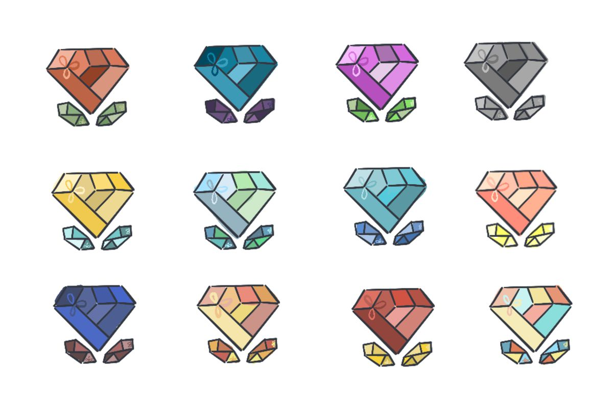
Ruby Logo Color Explorations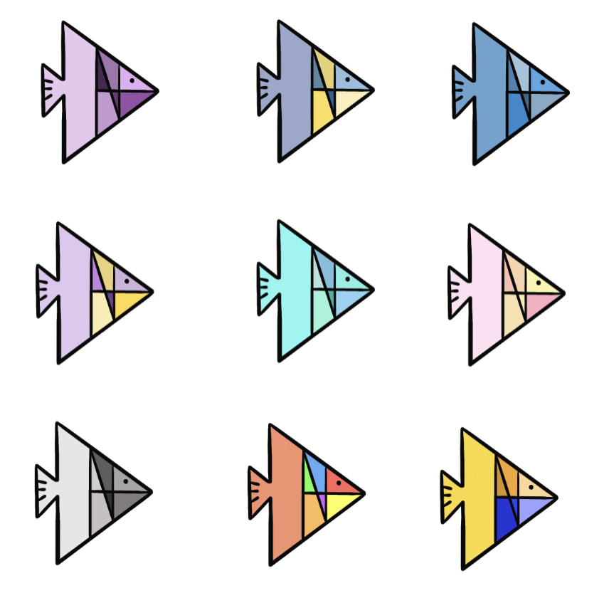
Hannah Logo Color Explorations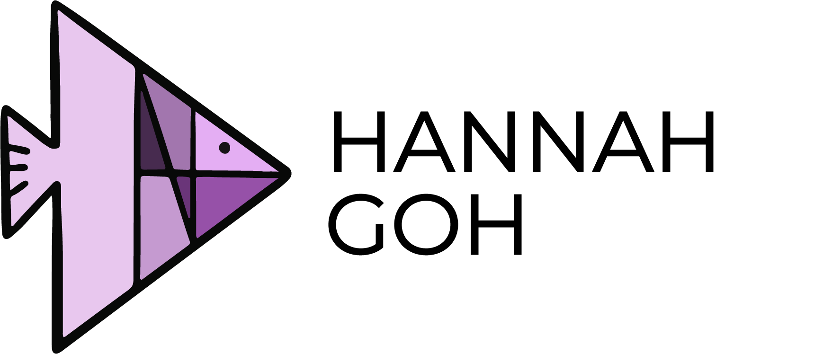
Hannah Final Logo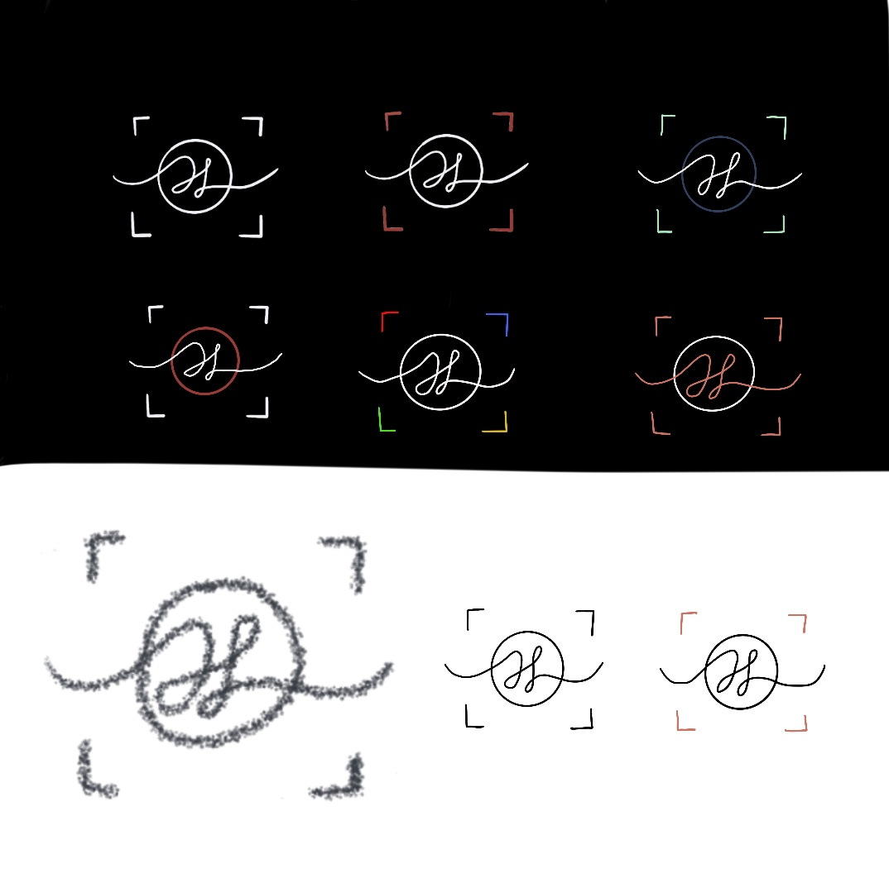
Hokson Logo Explorations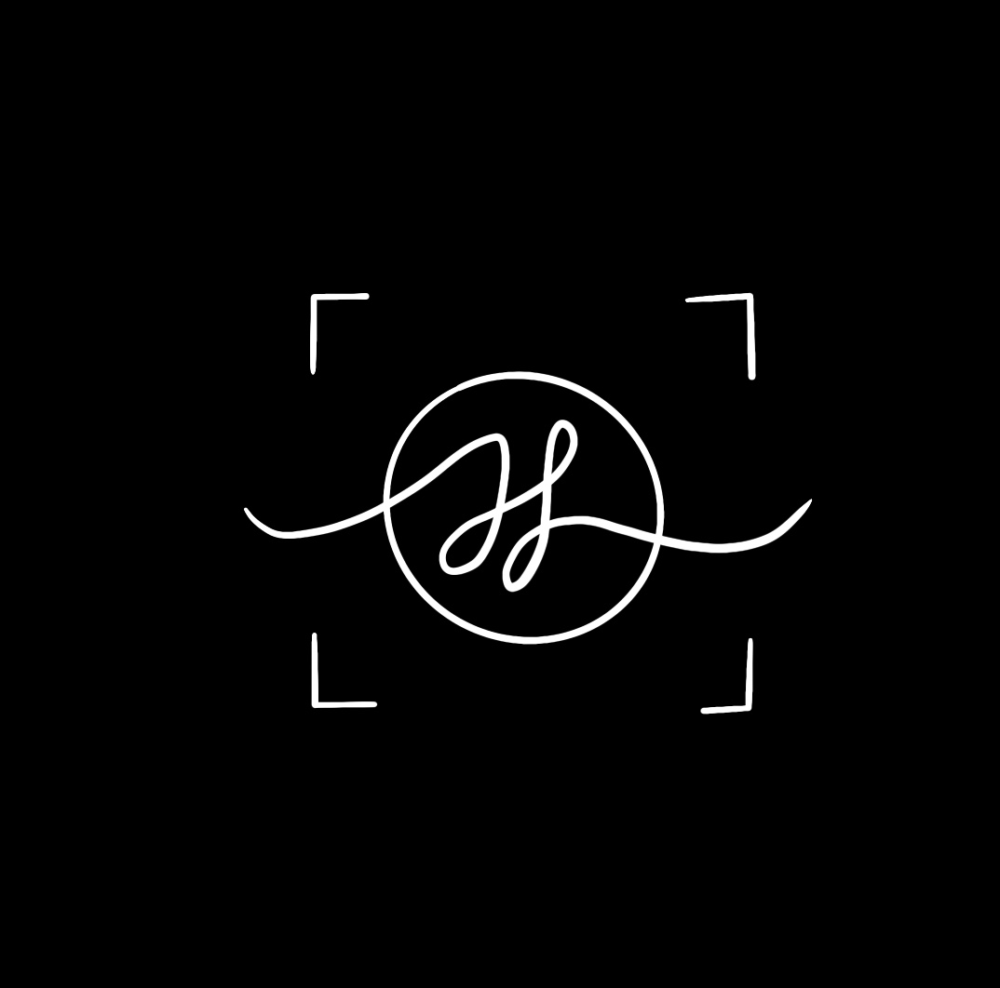
Hokson Final Logo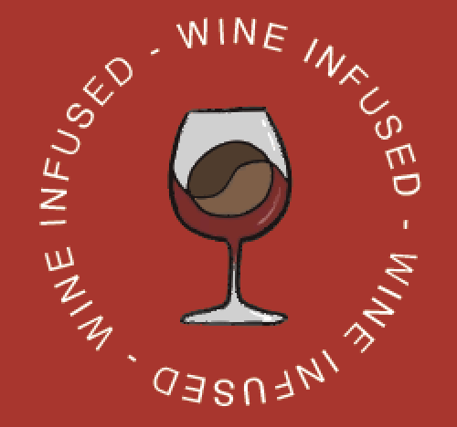
Reborn Coffee Wine Infused LogoProcreate doodles and short animations, drawn on my iPad.
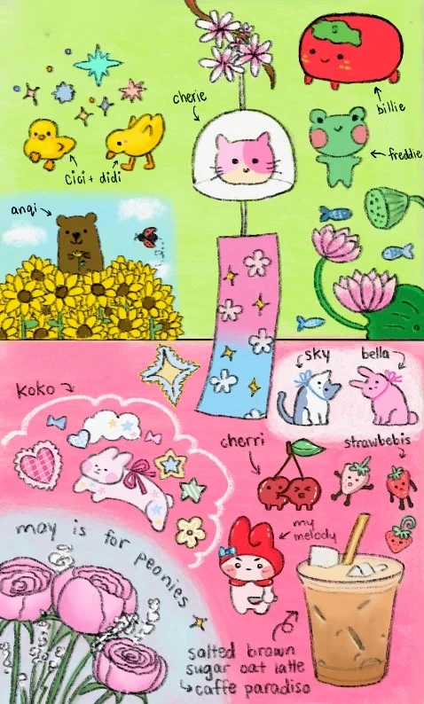
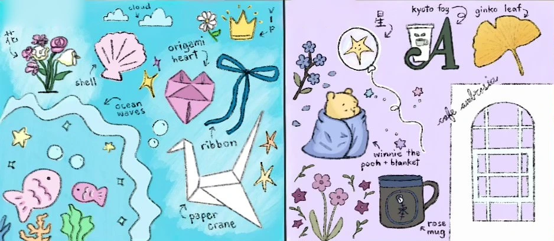
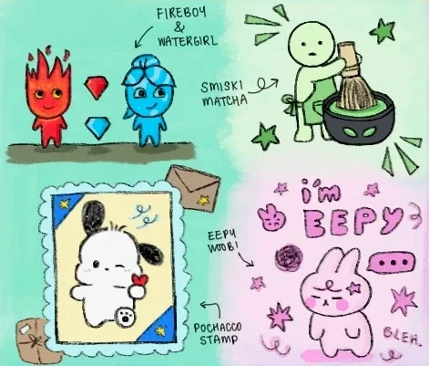
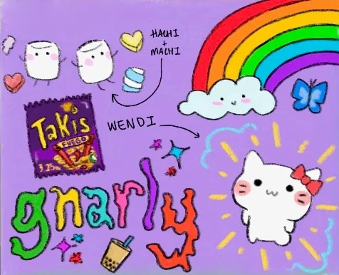
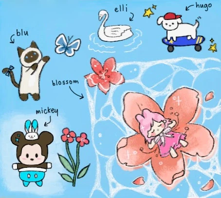
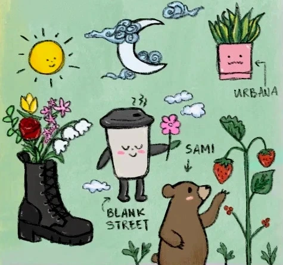